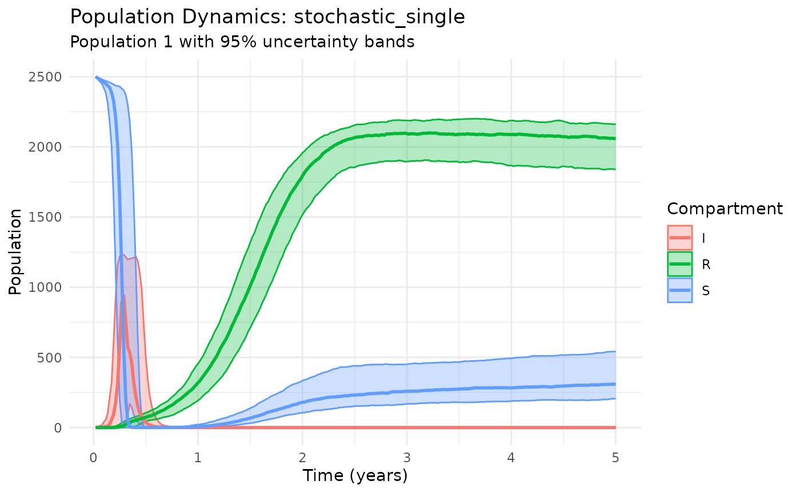
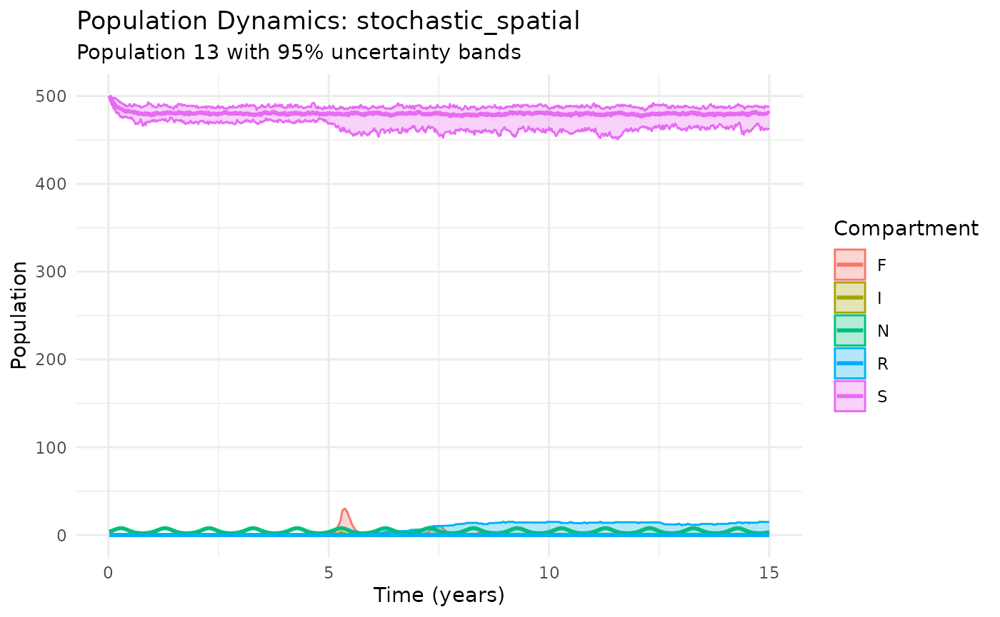
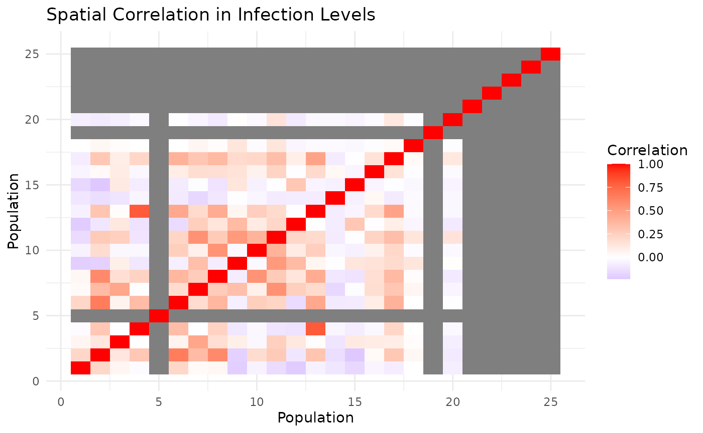
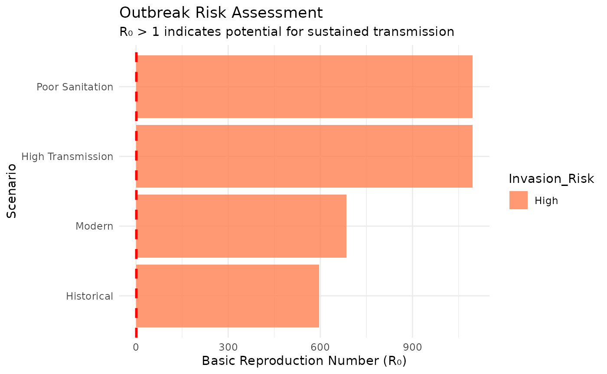

Introduction to yersinia: Plague Transmission Modeling in R
Nicolas Gauthier
2025-09-03
Source:vignettes/yersinia-intro.Rmd
yersinia-intro.RmdOverview
The yersinia package provides a comprehensive toolkit
for modeling plague transmission dynamics using stochastic simulation.
Built on the robust odin.dust framework, it captures
realistic biological processes including demographic stochasticity,
spatial spread, and complex multi-host dynamics.
Why Stochastic Models?
Plague outbreaks exhibit high variability due to: - Small population sizes where random events matter - Environmental stochasticity in transmission rates - Spatial heterogeneity in population densities - Stochastic extinction and recolonization events
Traditional deterministic models miss these crucial dynamics that determine real outbreak patterns.
Key Features
- Stochastic simulation: Demographic noise and realistic extinction/recolonization dynamics
- Spatial metapopulations: Migration, local adaptation, and spatial spread patterns
- Evidence-based parameters: Curated parameter sets from historical and contemporary research
- Multi-host dynamics: Rat-flea cycles with optional human transmission
- Comprehensive analysis: Built-in functions for R₀, outbreak metrics, spatial analysis, and visualization
- Professional plotting: Phase portraits, spatial heatmaps, animations, and publication-ready figures
Getting Started
Your First Plague Model
The simplest way to run a plague model is with
run_plague_model():
# Run a stochastic rat-flea model (single population)
results <- run_plague_model(
years = 2,
n_particles = 100 # Stochastic replicates for uncertainty quantification
)
# View the structured results
results
#> Plague Model Results
#> ====================
#> Model type: stochastic_single
#> Parameter set:
#> Time points: 104
#> Replicates: 100
#> Populations: 1
#> Compartments: S, I, R, N, F
#>
#> Data preview:
#> # A tibble: 52,000 × 5
#> population compartment replicate time value
#> * <int> <chr> <int> <dbl> <dbl>
#> 1 1 S 1 0.0192 2500
#> 2 1 I 1 0.0192 1
#> 3 1 R 1 0.0192 0
#> 4 1 N 1 0.0192 4
#> 5 1 F 1 0.0192 0
#> 6 1 S 2 0.0192 2500
#> 7 1 I 2 0.0192 1
#> 8 1 R 2 0.0192 0
#> 9 1 N 2 0.0192 4
#> 10 1 F 2 0.0192 0
#> # ℹ 51,990 more rowsThe model returns a plague_results object with: -
Tidy data format: Time-series data in long format with
standardized column names - Metadata: Model type,
parameters, and run information stored as attributes - Multiple
replicates: Each particle represents one stochastic
realization
Built-in Plotting
All results have intelligent default plotting that shows uncertainty across replicates:
plot(results)Basic plague dynamics showing median trajectories with 95% confidence intervals
Extracting Key Information
The package provides professional analysis tools instead of manual calculations:
# Get outbreak summary statistics
outbreak_stats <- calculate_outbreak_metrics(results, compartment = "I")
summary_stats <- summarize_outbreak_metrics(outbreak_stats)
print(summary_stats)
#> # A tibble: 1 × 11
#> population n_replicates outbreak_probability mean_peak median_peak sd_peak
#> <int> <int> <dbl> <dbl> <dbl> <dbl>
#> 1 1 100 1 975. 1012. 201.
#> # ℹ 5 more variables: mean_duration <dbl>, median_duration <dbl>,
#> # mean_time_to_peak <dbl>, peak_ci_lower <dbl>, peak_ci_upper <dbl>Evidence-Based Parameters
Curated Parameter Sets
The package includes parameter sets from key plague research:
# Examine a parameter set
keeling_params <- load_scenario("keeling-gilligan")
keeling_params
#> 🦠 Plague Scenario (keeling-gilligan)
#> 📄 Biological parameters from Keeling & Gilligan (2000) metapopulation plague model
#> 📚 Source: Keeling, M. J., & Gilligan, C. A. (2000)
#>
#> 🐀 Rat Population Parameters:
#> r_r = 5.000 # Rat population growth rate (per year)
#> d_r = 0.200 # Natural death rate of rats (per year)
#> p = 0.975 # Probability of inherited resistance
#>
#> 🦟 Flea Parameters:
#> K_f = 6.570 # Flea carrying capacity per rat
#> r_f = 20.000 # Flea reproduction rate (per year)
#> d_f = 10.000 # Death rate of free fleas (per year)
#> a = 0.004 # Flea search efficiency
#>
#> 🔬 Disease Parameters:
#> beta_r = 4.700 # Rat infection rate from fleas (per year)
#> m_r = 20.000 # Infected rat mortality rate (per year)
#> g_r = 0.020 # Probability rat survives infection
#>
#> 👤 Human Parameters:
#> r_h = 0.045 # Human population growth rate (per year)
#> d_h = 0.040 # Natural death rate of humans (per year)
#> beta_h = 0.010 # Human infection rate from fleas
#> m_h = 26.000 # Human recovery rate (per year)
#> g_h = 0.100 # Probability human survives infection
#>
#> ⚙️ Other Parameters:
#> mu_r = 0.030 # Rat movement rate (per year)
#> mu_f = 0.008 # Flea movement rate (per year)
#>
#> 📈 Basic Reproduction Number (R₀): 581.657 ✅ (Disease can spread)
# Compare R₀ across all parameter sets
param_sets <- c("defaults", "keeling-gilligan", "modern-estimates", "historical")
r0_comparison <- tibble(
Parameter_Set = param_sets,
R0 = map_dbl(param_sets, ~ calculate_R0(load_scenario(.x))),
Source = c("Package defaults", "Keeling & Gilligan (2000)", "Contemporary estimates", "Medieval estimates")
)
print(r0_comparison)
#> # A tibble: 4 × 3
#> Parameter_Set R0 Source
#> <chr> <dbl> <chr>
#> 1 defaults 582. Package defaults
#> 2 keeling-gilligan 582. Keeling & Gilligan (2000)
#> 3 modern-estimates 685. Contemporary estimates
#> 4 historical 596. Medieval estimatesThe basic reproduction number (R₀) determines outbreak potential: - R₀ > 1: Disease can spread and establish - R₀ < 1: Disease will die out without sustained transmission
Parameter Customization
Parameters can be modified at runtime without editing scenario files:
# Run model with modified transmission parameters
results_enhanced <- run_plague_model(
scenario = "keeling-gilligan",
beta_r = 8.0, # Higher rat infection rate
g_r = 0.05, # Higher rat survival rate
K_f = 6, # More fleas per rat
years = 3,
n_particles = 80
)
# Compare outbreak metrics
enhanced_stats <- results_enhanced |>
calculate_outbreak_metrics(compartment = "I") |>
summarize_outbreak_metrics()
cat("Enhanced transmission outbreak probability:", enhanced_stats$outbreak_probability, "\n")
#> Enhanced transmission outbreak probability: 1Model Architecture
Single Population: Core Dynamics
Examine the fundamental rat-flea transmission cycle:
# Focused rat-flea dynamics
results_core <- run_plague_model(
scenario = "keeling-gilligan",
npop = 1,
n_particles = 60,
years = 5
)
# Show only core compartments for clarity
plot_dynamics(results_core, compartments = c("S", "I", "R"))
Phase Space Analysis
Visualize the dynamical system in phase space:
# Create phase portrait for S-I dynamics
# Note: Advanced plotting functions are provisional and may change in future versions
plot_phase_portrait(results_core, compartments = c("S", "I"))Phase portrait showing susceptible-infected dynamics
Multi-Host Dynamics: Rats + Humans
Include human populations in the transmission cycle:
# Model including human transmission (single population only)
results_humans <- run_plague_model(
scenario = "historical", # Medieval parameters for dramatic effect
include_humans = TRUE,
npop = 1, # Human models require single population
n_particles = 60,
years = 8
)
# Plot all compartments to show multi-host dynamics
plot_dynamics(results_humans)Multi-host plague dynamics with humans
Human-Specific Analysis
Focus on human epidemic patterns:
# Calculate human outbreak metrics
human_metrics <- results_humans |>
calculate_outbreak_metrics(compartment = "Ih") |>
summarize_outbreak_metrics()
cat("Human outbreak probability:", round(human_metrics$outbreak_probability, 3), "\n")
#> Human outbreak probability: 0.967
cat("Mean peak human infections:", round(human_metrics$mean_peak, 0), "\n")
#> Mean peak human infections: 1641Spatial Metapopulations
Multi-population models with migration reveal spatial spread patterns:
# 25-population spatial model (5x5 grid with nearest-neighbor migration)
results_spatial <- run_plague_model(
scenario = "defaults",
K_r = 12500, # Total capacity distributed across populations
npop = 25, # Auto-configured as 5x5 grid
n_particles = 40,
years = 15,
seasonal = TRUE
)
# Basic spatial dynamics
plot_dynamics(results_spatial, population = 13) # Center population
Spatial Heat Maps (Provisional)
Visualize infection patterns across the landscape:
# Heat maps at different time points
# Note: Spatial plotting functions are experimental and may change
plot_spatial_heatmap(results_spatial, time_point = 3, compartment = "I")Spatial distribution of infections at different time points
plot_spatial_heatmap(results_spatial, time_point = 8, compartment = "I") Spatial distribution of infections at different time points
plot_spatial_heatmap(results_spatial, time_point = 12, compartment = "I")Spatial distribution of infections at different time points
Animated Spatial Spread (Provisional)
Create animations showing disease spread over time:
# Create animated visualization (requires gganimate)
# Note: Animation functions are experimental and may change
anim <- animate_spatial_spread(results_spatial, compartment = "I",
time_points = seq(0, 15, by = 0.5))
animSpatial Correlation Analysis
Quantify spatial synchrony in infection patterns:
# Calculate spatial correlation matrix
cor_matrix <- calculate_spatial_correlation(results_spatial, compartment = "I")
# Visualize correlation structure
cor_data <- cor_matrix |>
as.data.frame() |>
tibble::rownames_to_column("pop1") |>
tidyr::pivot_longer(-pop1, names_to = "pop2", values_to = "correlation") |>
mutate(
pop1_num = as.numeric(gsub("pop_", "", pop1)),
pop2_num = as.numeric(gsub("pop_", "", pop2))
)
ggplot(cor_data, aes(pop1_num, pop2_num, fill = correlation)) +
geom_tile() +
scale_fill_gradient2(low = "blue", mid = "white", high = "red",
midpoint = 0, name = "Correlation") +
labs(title = "Spatial Correlation in Infection Levels",
x = "Population", y = "Population") +
theme_minimal()
Environmental Seasonality
Seasonal forcing drives annual epidemic cycles:
# Compare seasonal vs non-seasonal models
results_constant <- run_plague_model(
scenario = "modern-estimates",
seasonal = FALSE,
years = 12,
n_particles = 50
)
results_seasonal <- run_plague_model(
scenario = "modern-estimates",
seasonal = TRUE,
years = 12,
n_particles = 50
)
# Plot comparison using built-in function
plot_comparison(list("Constant" = results_constant, "Seasonal" = results_seasonal),
compartment = "I")Seasonal plague dynamics showing annual cycles
Seasonal forcing captures the annual climate-driven cycles observed in natural plague systems, where transmission peaks during favorable environmental conditions.
Advanced Analysis Toolkit
Reproduction Numbers and Invasion Analysis
Calculate R₀ to predict outbreak potential:
# R₀ comparison across scenarios
r0_analysis <- tibble(
Scenario = c("Historical", "Modern", "High Transmission", "Poor Sanitation"),
Parameters = list(
load_scenario("historical"),
load_scenario("modern-estimates"),
load_scenario("modern-estimates", beta_r = 8.0),
load_scenario("modern-estimates", K_f = 8.0, K_r = 4000)
),
R0 = map_dbl(Parameters, calculate_R0),
Invasion_Risk = ifelse(R0 > 1, "High", "Low")
)
print(r0_analysis[c("Scenario", "R0", "Invasion_Risk")])
#> # A tibble: 4 × 3
#> Scenario R0 Invasion_Risk
#> <chr> <dbl> <chr>
#> 1 Historical 596. High
#> 2 Modern 685. High
#> 3 High Transmission 1096. High
#> 4 Poor Sanitation 1096. High
# Visualize invasion thresholds
ggplot(r0_analysis, aes(x = reorder(Scenario, R0), y = R0, fill = Invasion_Risk)) +
geom_col(alpha = 0.8) +
geom_hline(yintercept = 1, linetype = "dashed", color = "red", size = 1) +
coord_flip() +
scale_fill_manual(values = c("High" = "coral", "Low" = "lightblue")) +
labs(title = "Outbreak Risk Assessment",
subtitle = "R₀ > 1 indicates potential for sustained transmission",
x = "Scenario", y = "Basic Reproduction Number (R₀)") +
theme_minimal()
Force of Infection Dynamics
Analyze transmission pressure over time:
# Calculate force of infection for spatial model
#foi_data <- calculate_force_of_infection(results_spatial)
# Plot force of infection for central populations
# foi_data |>
# filter(population %in% 12:14) |> # Central populations
# tidyr::pivot_longer(c(lambda_h, lambda_r), names_to = "host", values_to = "foi") |>
# ggplot(aes(time, foi, color = factor(population))) +
# geom_line(alpha = 0.8) +
# facet_wrap(~host, scales = "free_y",
# labeller = labeller(host = c("lambda_h" = "Humans", "lambda_r" = "Rats"))) +
# labs(title = "Force of Infection Over Time",
# x = "Time (years)", y = "Force of Infection",
# color = "Population") +
# theme_minimal()Professional Outbreak Metrics
Use built-in analysis functions for comprehensive outbreak characterization:
# Comprehensive outbreak analysis for spatial model
outbreak_metrics <- results_spatial |>
calculate_outbreak_metrics(compartment = "I", threshold = 5) |>
summarize_outbreak_metrics()
# Display key metrics
cat("Spatial Model Outbreak Summary:\n")
#> Spatial Model Outbreak Summary:
cat("================================\n")
#> ================================
cat("Outbreak probability:", round(outbreak_metrics$outbreak_probability[1], 3), "\n")
#> Outbreak probability: 0.55
cat("Mean peak infections:", round(outbreak_metrics$mean_peak[1], 1), "\n")
#> Mean peak infections: 68.4
cat("Mean outbreak duration:", round(outbreak_metrics$mean_duration[1], 1), "years\n")
#> Mean outbreak duration: 1.6 years
cat("Time to peak:", round(outbreak_metrics$mean_time_to_peak[1], 1), "years\n")
#> Time to peak: 0.3 yearsParameter Sensitivity & Model Comparison
Systematic Parameter Exploration
Examine how key parameters influence outbreak dynamics:
# Systematic sensitivity analysis
sensitivity_params <- tidyr::expand_grid(
beta_r = c(2, 4, 6, 8, 10),
K_f = c(2, 4, 6, 8)
) |>
mutate(scenario_id = paste0("beta", beta_r, "_Kf", K_f))
# Run models and calculate outbreak metrics
sensitivity_analysis <- sensitivity_params |>
mutate(
results = pmap(list(beta_r, K_f), ~ run_plague_model(
scenario = "defaults",
beta_r = ..1,
K_f = ..2,
n_particles = 30,
years = 6
)),
metrics = map(results, ~ calculate_outbreak_metrics(.x, compartment = "I")),
summary = map(metrics, summarize_outbreak_metrics),
outbreak_prob = map_dbl(summary, ~ .x$outbreak_probability[1]),
mean_peak = map_dbl(summary, ~ .x$mean_peak[1])
)
# Visualize parameter sensitivity
ggplot(sensitivity_analysis, aes(beta_r, K_f, fill = outbreak_prob)) +
geom_tile() +
geom_text(aes(label = round(outbreak_prob, 2)), color = "white", size = 3) +
scale_fill_viridis_c(name = "Outbreak\nProbability") +
labs(title = "Parameter Sensitivity: Outbreak Probability",
x = "Rat Infection Rate (beta_r)",
y = "Flea Carrying Capacity (K_f)") +
theme_minimal()Parameter sensitivity analysis across key transmission parameters
Model Architecture Comparison
Compare dynamics across different model structures:
# Define different model configurations
model_configs <- list(
"Single Population" = list(npop = 1, include_humans = FALSE),
"Spatial (No Humans)" = list(npop = 16, include_humans = FALSE, K_r = 8000),
"Single + Humans" = list(npop = 1, include_humans = TRUE),
"Historical Parameters" = list(npop = 1, scenario = "historical", include_humans = FALSE)
)
# Run all model configurations
model_results <- imap(model_configs, ~ {
args <- .x
if (!"scenario" %in% names(args)) args$scenario <- "modern-estimates"
args$n_particles <- 40
args$years <- 8
do.call(run_plague_model, args)
})
# Use built-in comparison plotting
plot_comparison(model_results, compartment = "I")Comparison of model architectures
Equilibrium Analysis
Examine long-term system behavior:
# Calculate theoretical equilibria
# equilibrium_comparison <- param_sets |>
# map(~ {
# params <- load_scenario(.x)
# eq <- calculate_equilibrium(params, model_type = "rats_only")
# tibble(
# parameter_set = .x,
# R0 = eq$R0,
# equilibrium_type = eq$equilibrium_type,
# endemic_infected = ifelse(eq$equilibrium_type == "endemic", eq$I_r, 0)
# )
# }) |>
# bind_rows()
#
# print(equilibrium_comparison)Historical Applications
Black Death Modeling
Model medieval plague outbreaks with period-appropriate parameters:
# Historical plague with human transmission
results_black_death <- run_plague_model(
scenario = "historical",
include_humans = TRUE,
npop = 1,
n_particles = 60,
years = 6
)
# Analyze human epidemic characteristics
human_outbreak <- results_black_death |>
calculate_outbreak_metrics(compartment = "Ih") |>
summarize_outbreak_metrics()
cat("Black Death Simulation Results:\n")
#> Black Death Simulation Results:
cat("===============================\n")
#> ===============================
cat("Human outbreak probability:", round(human_outbreak$outbreak_probability, 3), "\n")
#> Human outbreak probability: 1
cat("Mean peak human infections:", round(human_outbreak$mean_peak, 0), "\n")
#> Mean peak human infections: 1742
cat("Mean epidemic duration:", round(human_outbreak$mean_duration, 1), "years\n")
#> Mean epidemic duration: 0.6 years
# Plot multi-host dynamics
plot_dynamics(results_black_death, compartments = c("I", "Ih", "F"))Black Death scenario with multi-host dynamics
Cross-Temporal Comparison
Compare historical vs modern plague dynamics:
# Compare different historical periods
historical_scenarios <- list(
"Medieval (Black Death)" = "historical",
"Early Modern" = "modern-estimates",
"Contemporary" = "defaults"
)
historical_results <- map(historical_scenarios, ~ run_plague_model(
scenario = .x,
npop = 1,
n_particles = 50,
years = 5
))
# Professional comparison using built-in function
plot_comparison(historical_results, compartment = "I")Historical vs modern plague transmission dynamics
# Quantitative comparison
historical_metrics <- historical_results |>
imap(~ tibble(
period = .y,
outbreak_prob = .x |>
calculate_outbreak_metrics(compartment = "I") |>
summarize_outbreak_metrics() |>
pull(outbreak_probability),
R0 = calculate_R0(load_scenario(historical_scenarios[[.y]]))
)) |>
bind_rows()
print(historical_metrics)
#> # A tibble: 3 × 3
#> period outbreak_prob R0
#> <chr> <dbl> <dbl>
#> 1 Medieval (Black Death) 1 596.
#> 2 Early Modern 1 685.
#> 3 Contemporary 1 582.Public Health Applications
Control Intervention Analysis
Evaluate effectiveness of different plague control strategies:
# Define intervention scenarios
interventions <- list(
"Baseline" = list(),
"Vector Control" = list(K_f = 2.0), # Reduce flea populations
"Host Reduction" = list(K_r = 2000), # Reduce rat populations
"Enhanced Surveillance" = list(beta_r = 3.5), # Earlier detection/treatment
"Combined Approach" = list(K_f = 2.5, K_r = 2500, beta_r = 4.0)
)
# Run intervention scenarios
intervention_results <- imap(interventions, ~ {
args <- c(.x, list(scenario = "modern-estimates", n_particles = 50, years = 6))
do.call(run_plague_model, args)
})
# Calculate intervention effectiveness
intervention_metrics <- intervention_results |>
imap(~ {
metrics <- .x |>
calculate_outbreak_metrics(compartment = "I") |>
summarize_outbreak_metrics()
tibble(
intervention = .y,
outbreak_probability = metrics$outbreak_probability[1],
mean_peak = metrics$mean_peak[1],
outbreak_reduction = 1 - (outbreak_probability / intervention_metrics$outbreak_probability[1])
)
}) |>
bind_rows()
# Calculate effectiveness relative to baseline
baseline_prob <- intervention_metrics$outbreak_probability[1]
intervention_metrics <- intervention_metrics |>
mutate(effectiveness = (baseline_prob - outbreak_probability) / baseline_prob * 100)
print(intervention_metrics[c("intervention", "outbreak_probability", "effectiveness")])
# Visualize intervention effectiveness
plot_comparison(intervention_results, compartment = "I")Spatial Risk Assessment
Assess outbreak risk across spatial landscapes:
# Risk assessment for spatial system
risk_spatial <- run_plague_model(
scenario = "modern-estimates",
npop = 25,
K_r = 15000,
n_particles = 100,
years = 10
)
# Calculate population-specific risk metrics
population_risk <- risk_spatial |>
filter(compartment == "I") |>
group_by(population) |>
summarise(
max_infected = max(value),
outbreak_frequency = mean(value > 5),
mean_infected = mean(value),
.groups = "drop"
) |>
mutate(
risk_category = case_when(
outbreak_frequency > 0.5 ~ "High Risk",
outbreak_frequency > 0.2 ~ "Moderate Risk",
TRUE ~ "Low Risk"
)
)
# Visualize spatial risk
plot_spatial_heatmap(risk_spatial, time_point = 5, compartment = "I")
# Risk summary
table(population_risk$risk_category)Early Warning Systems
Develop outbreak prediction based on force of infection:
# Calculate force of infection for early warning
foi_early_warning <- calculate_force_of_infection(risk_spatial)
# Identify high-risk time periods
warning_thresholds <- foi_early_warning |>
group_by(population) |>
summarise(
mean_foi_rats = mean(lambda_r),
peak_foi_rats = max(lambda_r),
high_risk_periods = sum(lambda_r > quantile(lambda_r, 0.9)),
.groups = "drop"
) |>
arrange(desc(peak_foi_rats))
cat("Populations requiring enhanced surveillance (top 5):\n")
print(head(warning_thresholds, 5))Summary
The yersinia package provides a comprehensive,
professionally designed toolkit for plague transmission modeling that
bridges theoretical epidemiology with practical public health
applications.
Key Capabilities Demonstrated
Modeling Framework
- Stochastic simulation: Captures demographic noise and extinction/recolonization dynamics missing from deterministic models
- Multi-scale architecture: From single populations to complex spatial metapopulations with migration
- Multi-host dynamics: Rat-flea-human transmission cycles with realistic biological parameters
- Environmental forcing: Seasonal dynamics reflecting natural plague ecology
Professional Analysis Tools
-
Core functions:
calculate_outbreak_metrics(),calculate_R0(),calculate_force_of_infection() -
Stable plotting:
plot()method andplot_comparison()for production use - Advanced visualization: Phase portraits, spatial heatmaps, and animations (provisional features)
- Spatial analysis: Correlation matrices, spatial spread patterns, and metapopulation synchrony
- Parameter exploration: Systematic sensitivity analysis and model comparison frameworks
Evidence-Based Parameters
- Curated scenarios: Historical, contemporary, and research-validated parameter sets
- Flexible customization: Runtime parameter modification without file editing
- Literature integration: Direct implementation of parameters from key plague research
Real-World Applications
-
Public health planning: Control intervention
assessment and effectiveness quantification
- Risk assessment: Spatial risk mapping and early warning system development
- Historical modeling: Black Death scenarios and cross-temporal epidemic comparison
- Policy evaluation: Evidence-based assessment of surveillance and control strategies
Why Choose Stochastic Models?
Traditional deterministic models fail to capture: - Small population effects where random events drive dynamics - Spatial heterogeneity and local extinction/recolonization - Uncertainty quantification essential for policy decisions - Realistic outbreak variability observed in natural systems
The yersinia package addresses these limitations while
maintaining computational efficiency and analytical rigor.
Getting Help & Further Resources
-
Function reference:
help(package = "yersinia") -
Main modeling function:
?run_plague_model -
Parameter details:
print()on loaded scenarios shows metadata and sources -
Theoretical background:
vignette("reference-deterministic-models")for deterministic comparisons
Key References
- Keeling, M. J., & Gilligan, C. A. (2000). Metapopulation dynamics of bubonic plague. Nature, 407(6806), 903-906.
- Stenseth, N. C., et al. (2008). Plague: past, present, and future.
PLoS Medicine, 5(1), e3.
- Bramanti, B., et al. (2019). Assessing the origins of the European Plagues following the Black Death. Proceedings of the National Academy of Sciences, 116(28), 13931-13940.
The yersinia package emphasizes reproducible, evidence-based modeling with professional-grade analysis capabilities for epidemiological research and public health decision-making.